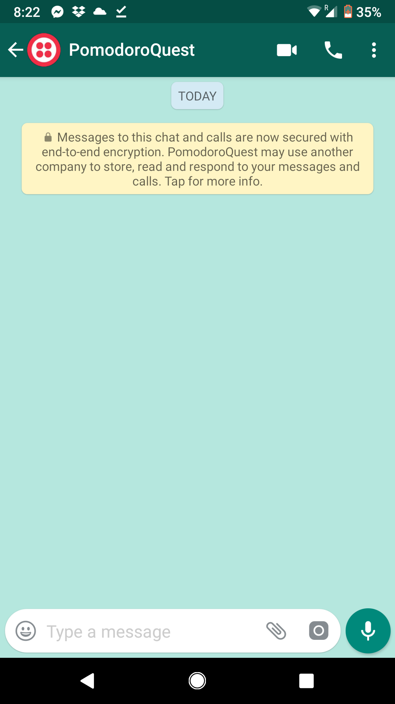
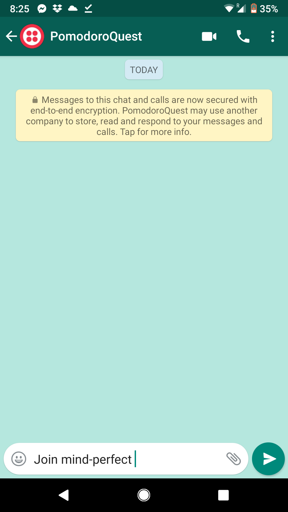
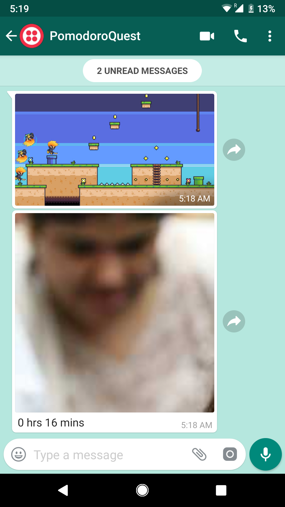

Create a new contact named PomodoroQuest +1 (415) 523-8886
Make sure to include the +1 so you can WhatsApp to this number.
Send a message with the exact words as shown in the picture.
Start tracking time with Toggl
Start, stop timer to start playing
E-mail us at support@PomodoroQuest.com to activate your account.
Keep your mobile right next to you! Watch the game unfold right infront of you! Visualizing your progress and keeping score will help you stay motivated and productive!
